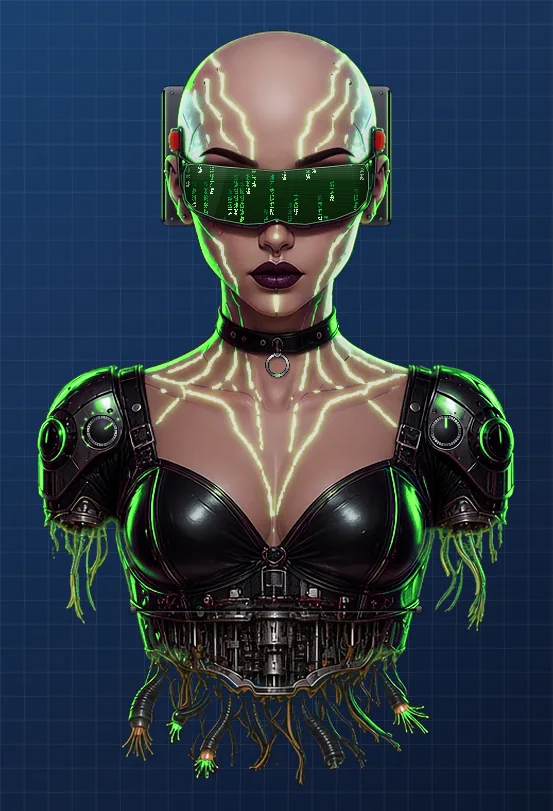
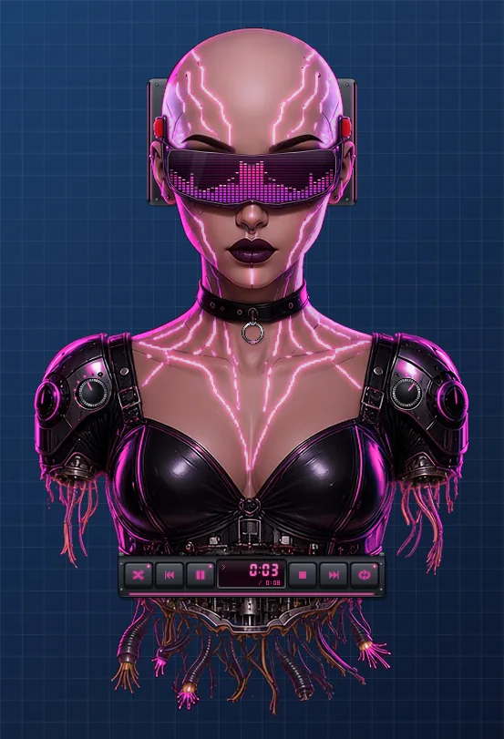
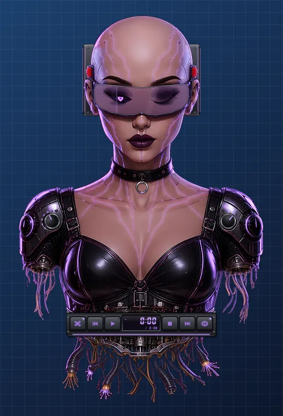

Vexa
A skinned desktop music player shaped like a goth cyberpunk android. She floats on your desktop with no window around her, and her visor, eyes and neon veins react to your music.




Features
- Custom-shaped window: just her silhouette, no rectangle
- Four visor visualizer modes (spectrum, waveform, matrix rain, scanning eye), each relighting her whole body
- Neon veins, LEDs and eyes pulse with the music
- Mechanical slide-out control panel with chunky analog sounds
- Plays local files and reacts to what's playing in other apps (e.g. browser music via Windows media controls)
- Facial reactions, sleep mode and little idle animations
System requirements
- Windows 10 or 11 (64-bit)
- Any recent CPU; a desktop with audio output
- About 200 MB of free disk space
Install
- Download the latest
.zipfrom the Releases page. - Right-click it, choose Extract All, and pick a folder.
- Open the folder and run
Vexa.exe. - If Windows SmartScreen appears, click More info then Run anyway.
Notes: builds are not code-signed yet, so Windows may warn you the first time. To uninstall, just delete the folder. Right-click Vexa for its menu.